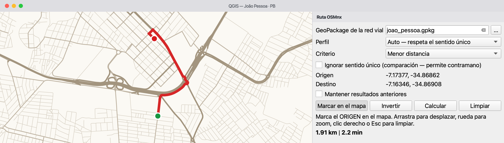
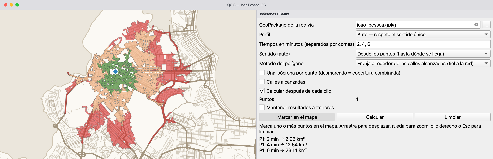
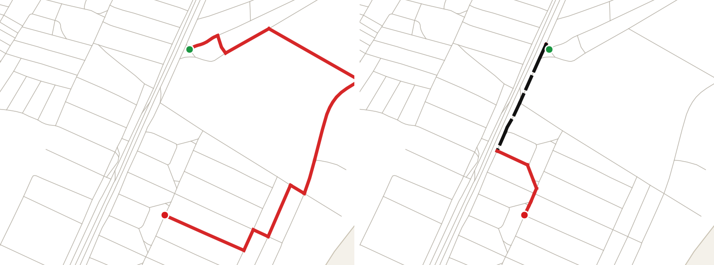
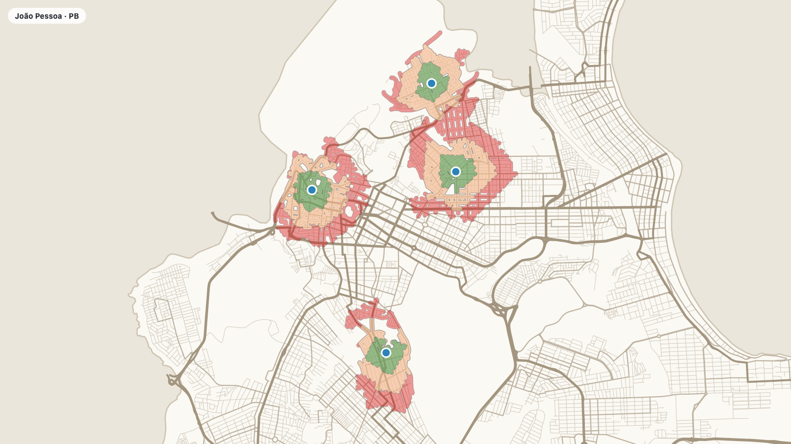
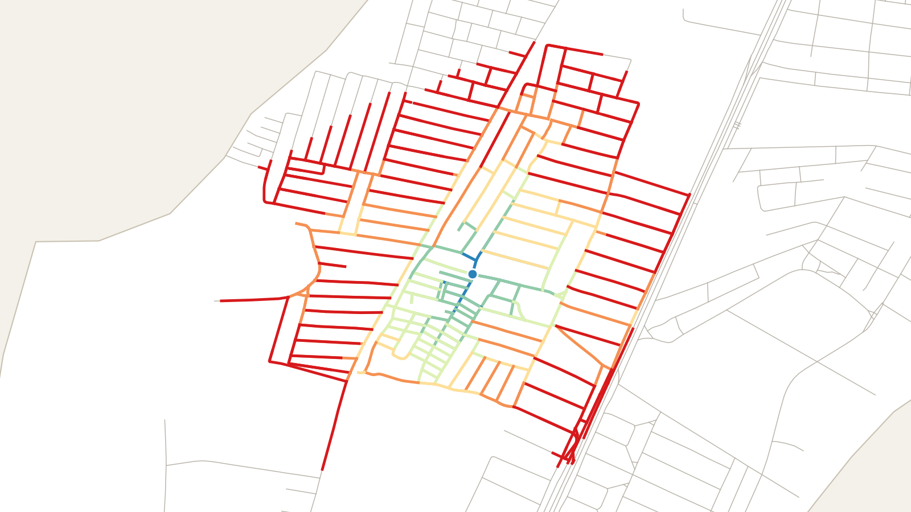

QGIS 3.34+ (probado)OSMnx 2.xInterfaz ES · EN · PT-BRGPL-2.0
Rutas e isócronas de OpenStreetMap, dentro de QGIS
Descarga una vez la red vial de un lugar, guárdala en un GeoPackage y calcula rutas que respetan el sentido de las calles y las áreas alcanzables en un tiempo dado — en tu equipo, sin servicio de ruteo ni clave de API. Los resultados son estimaciones basadas en los datos de OpenStreetMap de cada lugar.
Cuatro algoritmos de Procesos y dos herramientas interactivas en el mapa, construidos sobre OSMnx (descarga y manejo del grafo) y NetworkX (rutas más cortas).
Antes de empezar. Para descargar una red se necesita conexión a internet: el lugar se busca con Nominatim y las calles vienen de Overpass, dos servicios de OpenStreetMap. Una vez guardado el GeoPackage en tu equipo, las rutas y las isócronas se ejecutan localmente. Los resultados dependen de la cobertura y de los atributos disponibles en OpenStreetMap, que varían de un lugar a otro.
🗺️
Tu propia red
Convierte el nombre de un lugar en un GeoPackage con nodos, tramos de calle, arcos dirigidos y el límite del lugar.
↪️
Sentido de circulación
Las rutas en auto siguen el sentido registrado en OSM. Un modo de comparación muestra dónde un grafo no dirigido iría a contramano.
⏱️
Isócronas
Áreas estimadas como alcanzables en 5, 10, 15… minutos desde los puntos o hacia ellos, con el tiempo de llegada en cada calle alcanzada.
🖱️
Clic en el mapa
Paneles laterales dejan el mapa visible: marca los puntos, desplaza y haz zoom libremente; el cálculo corre en segundo plano.
Lo que no hace
tránsito en tiempo real o histórico, semáforos ni demoras de giro;
restricciones de giro, barreras y reglas de acceso dentro de la red descargada (solo el tipo de red filtra las vías al descargar);
transporte público ni viajes multimodales;
navegación paso a paso: una ruta calculada no es una ruta legal ni recomendada para conducir.
¿Qué herramienta uso?
Quiero…
Usa
Obtienes
trabajar en un lugar nuevo
1. Descargar red vial (OSM)
un GeoPackage con la red (requiere internet)
revisar un GeoPackage antes de usarlo
2. Inspeccionar GeoPackage de la red
un informe HTML: SRC, campos, completitud, diagnóstico de ruteo
probar una ruta con clics
Ruta en el mapa (barra de herramientas)
línea de la ruta, dos puntos, distancia y tiempo en el panel
calcular muchas rutas o usar un modelo
3. Ruta más corta (Procesos)
capa de la ruta y las salidas DISTANCE_KM / TIME_MIN
ver qué se alcanza desde lugares o hacia ellos
Isócronas en el mapa, o 4. Isócronas (Procesos) para una capa de puntos
polígonos de isócronas, calles alcanzadas y los puntos usados
Las herramientas en el mapa y los algoritmos de Procesos son dos formas de hacer el mismo cálculo: los paneles sirven para explorar con clics; los algoritmos, para capas de puntos, Ejecutar como proceso por lotes, el Modelador gráfico y scripts de Python.
Instalación
Instalar, reiniciar, verificar
QGIS ya incluye geopandas, networkx, shapely y pyproj. OSMnx debe añadirse al entorno de Python que usa QGIS, que en general no es el mismo que otras instalaciones de Python del equipo.
Requisitos y versiones probadas
Mínimo declarado: QGIS 3.28. Las pruebas automáticas corren en Linux con QGIS 3.34, la LTR actual y la versión más reciente; el complemento también se probó a mano en QGIS 3.44 (macOS). Windows aún no se ha probado.
OSMnx 2.x (probado con 2.1), que requiere geopandas 1.0 o más reciente.
Internet solo para descargar redes; rutas e isócronas funcionan sin conexión a partir del GeoPackage.
Sin permisos de administrador: --user instala en tu carpeta personal.
Instala OSMnx en el Python de QGIS
Abre Complementos → Consola de Python, pega el código y pulsa Enter. --no-deps conserva las bibliotecas que vienen con QGIS (ver abajo).
Tras reiniciar, ejecuta esto en la Consola de Python. La primera línea muestra qué Python se usa; la segunda debe imprimir las versiones sin errores.
importsys,osmnx,geopandas,networkxprint(sys.prefix)# should be inside the QGIS installationprint("osmnx",osmnx.__version__,"| geopandas",geopandas.__version__,"| networkx",networkx.__version__)
Instala el complemento
Complementos → Administrar e instalar complementos, busca OSMnx Routing & Isochrones. Mientras sea experimental, marca Mostrar también complementos experimentales en Configuración. También puedes usar Instalar a partir de ZIP con un archivo de las releases. Luego comprueba que OSMnx Routing & Isochrones aparezca en la Caja de herramientas de Procesos.
¿Por qué --no-deps y cuándo quitarlo?
OSMnx depende de numpy, pandas, geopandas, networkx, shapely y requests, que QGIS normalmente ya trae. Sin --no-deps, pip puede reemplazarlos por versiones para las que no se compilaron los módulos de QGIS (GDAL, scipy), con errores difíciles de rastrear. Si la verificación muestra ModuleNotFoundError de otro paquete, o un geopandas anterior a 1.0 (paquetes antiguos de Linux), instala solo ese paquete de la misma forma, p. ej. pip(["install", "--user", "--no-deps", "requests"]), o, como último recurso, ejecuta el comando sin --no-deps.
¿Cómo sé si pip instaló en el Python de QGIS?
Ejecuta el comando en la Consola de Python de QGIS, no en una terminal. sys.prefix en la verificación debe apuntar dentro de la instalación de QGIS (p. ej. /Applications/QGIS.app/…, C:\Program Files\QGIS … o /usr en los paquetes de Linux). Si OSMnx aparece en una terminal pero no en QGIS, se instaló en otro Python.
--user no funciona
En un entorno conda o virtual pip rechaza --user: quítalo del comando. En Debian/Ubuntu recientes, pip puede detenerse con externally-managed-environment; añadir "--break-system-packages" a la lista es aceptable aquí porque --user solo escribe en tu carpeta personal. Con el instalador OSGeo4W en Windows también puedes usar el OSGeo4W Shell: python -m pip install --no-deps osmnx.
Mientras falte una biblioteca, el complemento muestra un mensaje con el botón Cómo instalar y sus algoritmos quedan desactivados; el mensaje también va a Ver → Paneles → Mensajes de registro, pestaña OSMnx Routing.
Inicio rápido
Del nombre de un lugar al mapa
Un primer uso completo en Cabedelo, una pequeña ciudad costera de Brasil: la descarga tarda menos de un minuto con una conexión normal.
Descarga la red vial
Caja de herramientas de Procesos (Ctrl+Alt+T) → OSMnx Routing & Isochrones → 1. Descargar red vial (OSM). Escribe Cabedelo, Paraíba, Brasil, elige drive y guarda en un archivo (no en una salida temporal). Resultado esperado: cuatro capas en el proyecto — …_boundary, …_edges, …_nodes, …_arcs.
Revisa lo descargado (opcional)
2. Inspeccionar GeoPackage de la red genera un informe HTML. Resultado esperado: SRC EPSG:4326 y la capa arcs como fuente del sentido.
Marca una ruta
Botón Ruta en el mapa de la barra: clic en el origen y luego en el destino. Resultado esperado: una línea roja y, en el panel, la distancia y el tiempo estimado.
Marca isócronas
Botón Isócronas en el mapa: clic en un punto. Resultado esperado: polígonos de 5, 10 y 15 minutos, del verde al rojo, y sus áreas en el panel.
Herramientas en el mapa
Clic en el mapa, con desplazamiento y zoom libres
Ambas herramientas abren un panel lateral que no tapa el mapa. Un clic marca un punto, arrastrar desplaza, la rueda hace zoom, el botón derecho o Esc borra. El GeoPackage de la red se toma de las capas ya abiertas en el proyecto; también puedes elegirlo en el panel.
Ruta en el mapa
Primer clic = origen, segundo = destino; la ruta se calcula entonces en segundo plano. Invertir cambia el sentido; un tercer clic empieza un nuevo origen. Los clics quedan en la capa Puntos de la ruta.

El panel de ruta junto al mapa, con la distancia y el tiempo estimado.
Isócronas en el mapa
Cada clic agrega un punto (P1, P2…) a la capa Puntos de las isócronas y las isócronas se recalculan — desmarca Calcular después de cada clic para marcar varios puntos antes. El panel lista el área de cada franja.

El panel de isócronas: tiempos, sentido, método y el área de cada franja. cerca lejos
💡 Cada ejecución reemplaza el resultado anterior; marca Mantener resultados anteriores para comparar escenarios.
Detener un cálculo. Las herramientas en el mapa corren como tareas en segundo plano de QGIS: cancélalas desde la barra de progreso al pie de la ventana de QGIS. En un diálogo de Procesos, usa Cancelar. Los errores aparecen en el panel o en la pestaña Registro del diálogo.
Capturas de pantalla: complemento 0.1, QGIS 3.44, interfaz en español.
Referencia
Los cuatro algoritmos de Procesos
Funcionan en el diálogo, en Ejecutar como proceso por lotes, en el Modelador gráfico y desde Python. Cada bloque sigue el mismo orden: cuándo usarlo, entradas, salidas, cómo leer el resultado y limitaciones.
1. Descargar red vial (OSM)
osmnx_routing:download_network
Úsalo cuando necesitas la red de un lugar que aún no descargaste.
Parámetro
Descripción
Nombre del lugar
Municipio, distrito o barrio con estado y país, p. ej. Campina Grande, Paraíba, Brasil. Nominatim lo busca y su polígono de límite acota la descarga.
Tipo de red
drive vías públicas para auto · drive_service más vías de servicio · walk red peatonal · bike red ciclista · all_public todas las vías públicas · all incluidas las privadas. Elige una acorde al perfil que vas a usar.
GeoPackage de salida
Archivo a escribir. Una salida temporal se borra al cerrar QGIS; el registro lo advierte.
Salidas
Capas edges (una línea por tramo de calle, para visualización), arcs (una línea por sentido de circulación, para el ruteo), nodes y boundary (con la consulta, el nombre en OSM y la fecha de descarga). Los tramos llevan speed_kph y travel_time.
Cómo leer el resultado
El registro indica el número de nodos y arcos. Muestra edges sobre un mapa base para ver si están las calles que necesitas.
Limitaciones
Requiere internet; usa el proxy HTTP definido en Configuración → Opciones → Red. Los lugares grandes pueden tardar varios minutos y Overpass puede rechazar consultas pesadas. Respeta las políticas de uso de Nominatim y Overpass: evita repetir pedidos en rápida sucesión. Los pedidos idénticos se responden desde la caché de OSMnx en ~/osmnx/cache.
2. Inspeccionar GeoPackage de la red
osmnx_routing:inspect_network
Úsalo cuando recibiste o editaste un GeoPackage y quieres revisarlo antes del ruteo. Solo necesita QGIS, no OSMnx.
Parámetro
Descripción
GeoPackage de la red vial
Cualquier GeoPackage; las capas pueden tener prefijo (patos_nodes…).
Informe
Archivo HTML a escribir.
Salidas
Un informe HTML que se abre en el navegador: SRC, geometría, extensión, campos con la proporción de valores completos, una muestra y un diagnóstico de ruteo.
Cómo leer el resultado
Un maxspeed poco completo significa que la mayoría de los tiempos vienen de velocidades por defecto. La fuente del sentido debe ser la capa arcs.
Limitaciones
Describe los datos; no los corrige.
3. Ruta más corta (respeta el sentido)
osmnx_routing:shortest_path
Úsalo cuando necesitas el camino entre dos puntos, su longitud y su tiempo estimado.
Parámetro
Descripción
Perfil
Auto — sigue el sentido de las calles · Peatón — ignora el sentido.
Criterio
Menor distancia minimiza la longitud en metros. Más rápida (auto) minimiza travel_time, una estimación a partir de velocidades; ver Cómo funciona.
Origen, Destino
Puntos en cualquier SRC. Cada uno se une al nodo más cercano de la red, como se explica abajo.
Ignorar sentido único
Solo para comparación o diagnóstico: permite ir a contramano y marca esos tramos.
Velocidad a pie
km/h, por defecto 4,8.
Salidas
Líneas de la Ruta con orden, nombre de la calle, tipo de vía, sentido único, wrong_way, longitud, velocidad, tiempo y acumulados; Puntos de la ruta; los números DISTANCE_KM, TIME_MIN y WRONG_WAY_M.
Cómo leer el resultado
Compara la ruta con el mapa base. El registro avisa cuando un punto está a más de 150 m de su nodo: la ruta entonces empieza o termina en ese nodo, no en el clic.
Limitaciones
El tiempo no incluye tránsito, semáforos ni demoras de giro, y no se aplican restricciones de giro. Las reglas de sentido único son tan completas como las etiquetas de OSM.
4. Isócronas (áreas de alcance)
osmnx_routing:isochrones
Úsalo cuando quieres el área alcanzable en algunos minutos desde puntos (o desde la que se llega a ellos).
Parámetro
Descripción
Punto / Capa de puntos
Un punto marcado, una capa (escuelas, centros de salud…) o ambos; el campo de nombre identifica cada punto.
Una isócrona por punto
Marcado: un conjunto de polígonos por punto. Desmarcado: una cobertura combinada de todos los puntos.
Sentido (auto)
Desde los puntos (hasta dónde se llega) o hacia ellos (desde dónde se llega).
Tiempos en minutos
p. ej. 5, 10, 15 (también 5;10;15).
Método del polígono
Franja alrededor de las calles alcanzadas, o envolvente cóncava de los nodos alcanzados.
Ancho de la franja
Metros alrededor de las calles, por defecto 40.
Salidas
Isócronas (source, minutes, area_km2, roads_km), Calles alcanzadas con tiempo de llegada inicial y final, Puntos de las isócronas.
Cómo leer el resultado
Lee los polígonos junto con las Calles alcanzadas: el polígono es una representación cartográfica; la capa de calles muestra lo que la red alcanza de verdad.
Limitaciones
Los mismos límites que las rutas. Una isócrona peatonal sobre una red drive no tiene veredas ni senderos: descarga walk o all para estudios a pie.
Campos y salidas
Campo
Significado
speed_kph
Velocidad del tramo en km/h (maxspeed de OSM o un valor por defecto).
travel_time
Tiempo estimado para recorrer el tramo, en segundos.
wrong_way
true cuando la ruta usa el tramo a contramano (solo con Ignorar sentido único).
DISTANCE_KM · TIME_MIN · WRONG_WAY_M
Longitud de la ruta en km, tiempo estimado en minutos y metros recorridos a contramano.
minutes · area_km2 · roads_km
Umbral de tiempo del polígono, su área en km² y la longitud de calles alcanzadas en km (las de doble sentido se cuentan una vez).
t_start_min · t_end_min
Tiempo de llegada en minutos al inicio y al final de un tramo alcanzado.
Automatización con Python
Cada algoritmo tiene un id estable; los parámetros de lista reciben la posición de la opción (0, 1, 2…).
importprocessing# 1. descargar una vez (requiere internet)processing.run("osmnx_routing:download_network",{"PLACE":"Cabedelo, Paraíba, Brasil","TYPE":2,# 2 = drive"OUTPUT":"/datos/cabedelo.gpkg"})# 2. ruta en auto, menor tiempo estimado (se ejecuta localmente)res=processing.run("osmnx_routing:shortest_path",{"NETWORK":"/datos/cabedelo.gpkg","PROFILE":0,"CRITERION":1,"ORIGIN":"-34.8410,-7.0323 [EPSG:4326]","DESTINATION":"-34.8417,-7.0371 [EPSG:4326]","OUTPUT":"TEMPORARY_OUTPUT"})print(res["DISTANCE_KM"],res["TIME_MIN"])# 3. isócronas a pie de una capa de puntos, una por puntoprocessing.runAndLoadResults("osmnx_routing:isochrones",{"NETWORK":"/datos/cabedelo.gpkg","PROFILE":1,# 1 = peatón"POINTS":"/datos/escuelas.gpkg","ID_FIELD":"nombre","SEPARATE":True,"MINUTES":"5, 10, 15","OUTPUT":"TEMPORARY_OUTPUT","ROADS":"TEMPORARY_OUTPUT"})
Cómo funciona
Supuestos que cambian el resultado
Conocer estas decisiones ayuda a juzgar si un resultado es razonable.
Unión de los puntos a la red
Cada punto se une al nodo más cercano de la red, medido en un SRC métrico local. Para auto solo cuentan los nodos del mayor componente fuertemente conexo — nodos desde los que se llega a cualquier otro y se vuelve, respetando el sentido —, así que siempre existe una ruta. Para peatón se usa el mayor componente conexo. Por eso, un punto en una calle aislada se une al nodo más cercano de la red principal, que puede estar a cierta distancia. Los puntos a más de 5 km de cualquier nodo candidato se rechazan (rutas) o se omiten (isócronas).
Distancia o tiempo
Menor distancia suma la longitud de los tramos; más rápida suma travel_time. La ruta más rápida es la de menor tiempo estimado, no una garantía del viaje real más corto. Para peatón la velocidad es constante, así que ambos criterios dan el mismo camino.
Velocidades
travel_time = longitud ÷ velocidad. La velocidad es la etiqueta maxspeed de OSM cuando existe; si no, un valor por tipo de vía (motorway 100, primary 60, secondary 50, tertiary 40, residential 30, service 20, living_street 10 km/h); los demás tipos usan el promedio de las vías etiquetadas del mismo tipo, o 30 km/h. Son valores urbanos para tránsito fluido.
Sentido único
La capa arcs tiene un registro por sentido de circulación: una calle de doble sentido da dos arcos; una de sentido único, un arco. El auto solo usa arcos; el peatón camina en ambos sentidos. Su exactitud depende de las etiquetas oneway de OpenStreetMap.
Ignorar sentido único agrega los arcos inversos faltantes y los marca como wrong_way. Muestra el error que cometería un grafo no dirigido; su resultado no es una ruta para conducir.
rutacontramanoorigendestino

Auto, respetando el sentido — la ruta es más larga.
Ignorando el sentido único — más corta, pero el tramo negro punteado va a contramano.
Desde o hacia los puntos
Desde los puntos responde «¿hasta dónde llego desde aquí en 10 minutos?». Hacia los puntos responde «¿desde dónde se llega aquí en 10 minutos?»: el cálculo corre sobre el grafo invertido. Solo difieren para auto, por el sentido único.
Una isócrona por punto o cobertura combinada
Con una isócrona por punto, cada punto tiene sus propios polígonos, que pueden superponerse. La cobertura combinada parte de todos los puntos a la vez: cada calle recibe el tiempo del punto que la alcanza más rápido por la red (no el más cercano en línea recta), y se genera un polígono por tiempo.

Isócronas a pie (5, 10, 15 min) de cuatro puntos de ejemplo (piensa en escuelas), una por punto. cerca lejos
Métodos de polígono
Franja alrededor de las calles alcanzadas: cada tramo alcanzado recibe un buffer del ancho de la franja; el último tramo de cada camino se corta en proporción al tiempo restante, suponiendo velocidad constante en él. El polígono sigue la red. Envolvente cóncava: un contorno más suave alrededor de los nodos alcanzados y los extremos cortados. Es más fácil de leer, pero su interior incluye lugares que la red no alcanza (manzanas, agua, áreas cercadas).
Franja alrededor de las calles alcanzadas — sigue la red.
Envolvente cóncava — más suave; no todo el interior es alcanzable.

Calles alcanzadas: tiempo estimado de llegada a pie en cada tramo de calle, desde un punto en Tambaú, junto al mar. cerca lejos
Lectura y caché
El primer cálculo sobre un GeoPackage lo lee y arma los grafos; los siguientes los reutilizan mientras QGIS esté abierto. Si el archivo cambia en el disco, se vuelve a leer. Solo se mantiene una red en memoria a la vez.
Glosario
OpenStreetMap (OSM)
Base colaborativa de datos geográficos. La cobertura y el detalle varían entre lugares y no son uniformemente completos ni actualizados.
OSMnx
Biblioteca de Python que el complemento usa para descargar redes de OSM y convertirlas en grafos.
Nominatim / Overpass
Servicios de OSM que encuentran un lugar por su nombre (geocodificación) y devuelven los datos del mapa dentro de un área.
GeoPackage
Archivo único .gpkg que puede guardar varias capas vectoriales y tablas.
SRC
Sistema de referencia de coordenadas: cómo las coordenadas de una capa se relacionan con lugares en la Tierra. La red se guarda en EPSG:4326 (longitud/latitud); las distancias se miden en un SRC métrico local (UTM).
Nodo
Punto de la red: una intersección o el final de una calle.
Tramo (edge)
Parte de una calle entre dos nodos, usada para visualizar.
Arco dirigido
Tramo con un sentido de circulación. Una calle de doble sentido son dos arcos; una de sentido único, un arco en el sentido permitido.
Grafo dirigido
Red en la que cada conexión tiene un sentido; necesaria para modelar el sentido único.
Ruta más corta
Camino de menor costo total; el costo es la distancia o el tiempo estimado.
Componente fuertemente conexo
Mayor conjunto de nodos en el que cada nodo alcanza a todos los demás siguiendo el sentido de los arcos.
Isócrona
Área estimada como alcanzable dentro de un límite de tiempo por la red y el perfil elegidos. El polígono es una representación cartográfica.
Envolvente cóncava
Contorno que se ajusta a un conjunto de puntos más que la envolvente convexa. Representa los datos; no prueba el acceso a todo lugar interior.
Ayuda
Solución de problemas
Cada entrada indica la causa probable y qué hacer.
Los algoritmos están desactivados, o «Faltan bibliotecas de Python»
Causa probable: OSMnx (u otra biblioteca) no se encuentra en el Python de QGIS.
Qué hacer: Sigue los pasos de Instalación, reinicia QGIS y ejecuta el código de verificación.
«Sin resultados para …» o «no tiene un polígono de límite»
Causa probable: Nominatim no encontró el lugar, o lo encontró como punto o línea (una calle, un punto de interés).
Qué hacer: Escribe el nombre como en OpenStreetMap, con estado y país, y usa un municipio, distrito o barrio. Buscar el nombre en openstreetmap.org muestra lo que encuentra Nominatim.
La descarga falla o se agota el tiempo
Causa probable: El área es grande, los servidores de OSM están ocupados, la conexión es lenta o se necesita un proxy.
Qué hacer: Inténtalo más tarde o con un lugar más pequeño; revisa el proxy en Configuración → Opciones → Red. No repitas el pedido en rápida sucesión.
«… km de la red vial»
Causa probable: El punto está a más de 5 km de la red: fuera del área descargada, o en una capa con el SRC equivocado.
Qué hacer: Marca dentro del área del GeoPackage, revisa el SRC de la capa de puntos o descarga un lugar más grande.
«El origen y el destino se ajustan al mismo nodo de la red»
Causa probable: Los dos puntos se unen al mismo nodo (están muy cerca o ambos en una calle aislada).
Qué hacer: Elige puntos más separados.
La ruta usa una calle extraña o empieza lejos de mi clic
Causa probable: El clic se unió a un nodo de la red principal a cierta distancia, o las etiquetas de sentido único faltan o están mal en OSM.
Qué hacer: Lee los avisos del registro, mira la capa arcs cerca del punto y, si el dato está mal, considera corregirlo en OpenStreetMap y descargar de nuevo.
Las isócronas a pie parecen demasiado pequeñas
Causa probable: La red se descargó como drive y no tiene veredas ni senderos.
Qué hacer: Descarga el lugar de nuevo con walk o all.
Guardé las capas en otro GeoPackage
Causa probable: Guardar capas temporales puede perder el SRC y agregar un prefijo a los nombres.
Qué hacer: Funciona: los nombres con prefijo (patos_nodes…) se reconocen y las capas lon/lat sin SRC se toman como EPSG:4326 (el registro lo avisa). Mantén una red por GeoPackage.
Cómo informar un problema. Abre un issue con: la versión del complemento (Administrador de complementos), la versión de QGIS y el sistema operativo (Ayuda → Acerca de), el lugar y el tipo de red, y el mensaje completo del panel, de la pestaña Registro del diálogo o de Ver → Paneles → Mensajes de registro.
Sobre el autor
Marcello Benigno
Profesor de la carrera de Tecnología en Geoprocesamiento del Instituto Federal de Paraíba (IFPB), Brasil.
Es magíster en Ciencias Geodésicas y Tecnologías de la Geoinformación por la Universidad Federal de Pernambuco (UFPE), especialista en Programación para la Web e ingeniero civil por la Universidad Federal de Campina Grande (UFCG).
Profesor del Instituto Federal de Paraíba (IFPB) desde hace más de 20 años, se dedica a la formación de profesionales en Geoprocesamiento y al desarrollo de soluciones tecnológicas aplicadas al análisis y la gestión de datos geoespaciales.
Tiene experiencia en el desarrollo de Sistemas de Información Geográfica (SIG) y aplicaciones WebGIS, en la arquitectura y administración de bases de datos espaciales y en la automatización de procesos de geoprocesamiento. Trabaja principalmente con tecnologías de código abierto e integra herramientas como QGIS, PostgreSQL/PostGIS, GeoServer, Python y JavaScript.
 Ruta en el mapa
Ruta en el mapa Isócronas en el mapa
Isócronas en el mapa